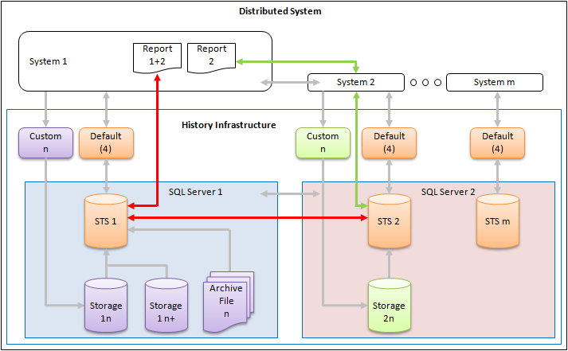

History Infrastructure for Reporting in a Distributed System
The infrastructure may extend to multiple SQL servers in a distributed system. Data from the different systems can be compiled to provide a joint report.
Data from multiple systems
Red line: The data query from system 1 takes place in the short term storage for system 1 if data is required from multiple systems. The data required from system 2 is provided by a query from SQL server 1 to SQL server 2.
Data from another system
Green line: Data is exchanged directly at the system level to SQL server 2 if a data query from system 1 occurs for system 2 only.
